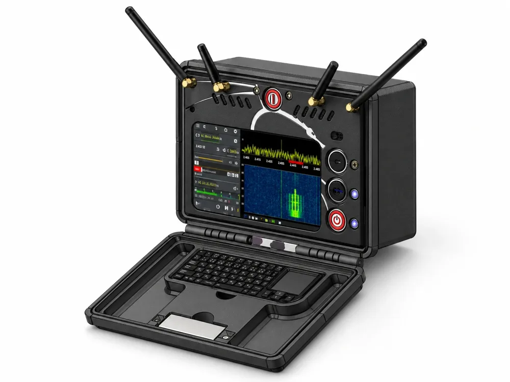

Concevoir une unité mobile pour l’analyse et les audits radiofréquences sur site.
SDRRaspberry PiIntégration mécanique

Le besoin
Réunir le matériel d’audit radio dans une valise utilisable sur site.
L’intervention
Intégration de l’architecture SDR, de son pilotage et du châssis dans une valise transportable.
Le résultat
Un prototype autonome réunissant écran, commandes, électronique et antennes.
Besoin et contraintes
AEGIS-RF est une unité transportable destinée aux audits de liaisons sans fil sur site. Elle regroupe la radio, l’ordinateur de pilotage et les commandes dans une valise.
Les audits envisagés portent sur les échanges radio non chiffrés et le comportement d’équipements soumis à des perturbations, dans un cadre de test défini.
Le cahier des charges visait une couverture de 70 MHz à 6 GHz et plus de huit heures d’autonomie pour les interventions sur site. Ces valeurs sont des objectifs de conception, pas des performances vérifiées dans cette fiche.
Conception et architecture
L’architecture SDR associe un SoC Zynq7020 et un transceiver AD9363. Un Raspberry Pi 5 sous une version adaptée de Kali Linux assure le pilotage. La couverture visée dépend de la configuration radio retenue.
Interface logicielle de l'unité
Réalisation et intégration
Le châssis imprimé en 3D maintient les modules radio et les cartes électroniques dans la valise.
Les étages d’amplification nécessitent une dissipation thermique. Un refroidissement actif a été intégré au châssis ; son comportement reste à caractériser par des mesures.
Conception mécanique interne
Mesures à documenter
Le prototype est intégré. Les essais radiofréquences, thermiques et d’autonomie restent à documenter avant d’annoncer des performances vérifiées.
Résultat
La radio, les étages d’amplification, le calcul et les commandes sont regroupés dans une valise transportable. La caractérisation de la couverture radio et de l’autonomie est l’étape suivante.
Unité AEGIS-RF finalisée
Un projet similaire ?
Parlons de votre besoin.
Une idée, une difficulté technique ou un prototype à faire évoluer.